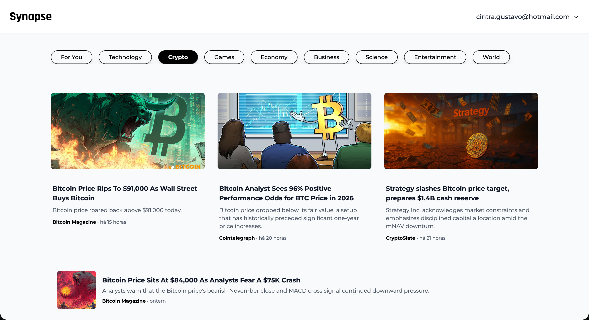
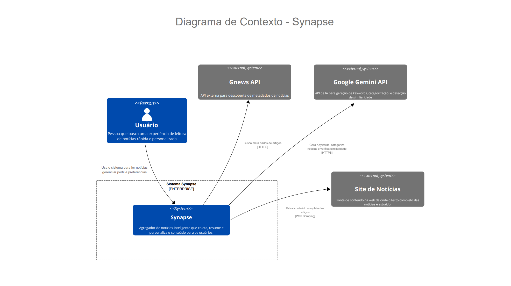
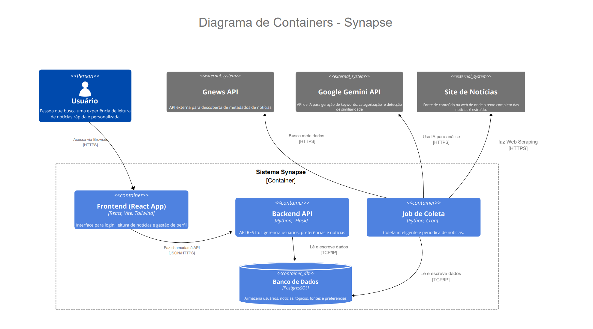
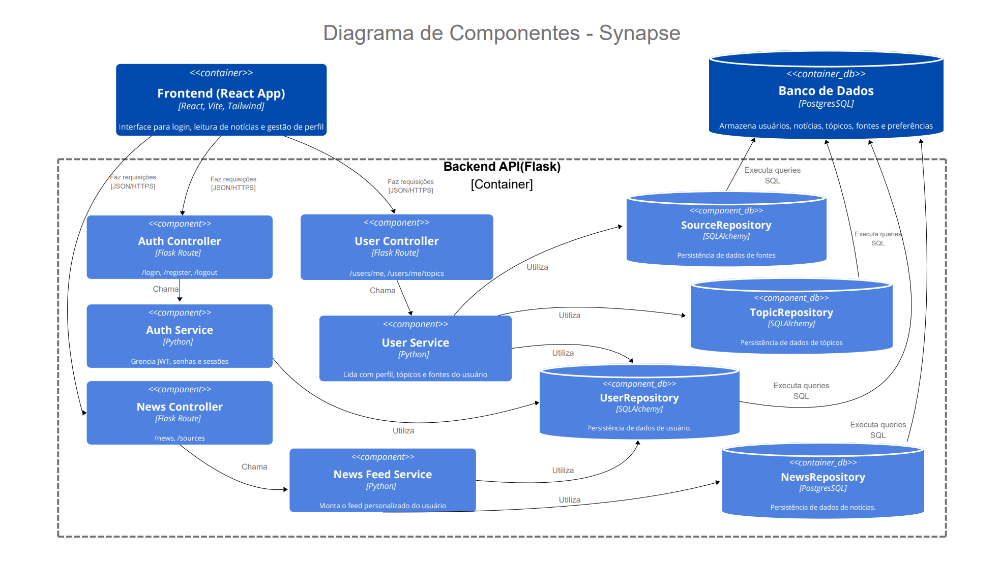
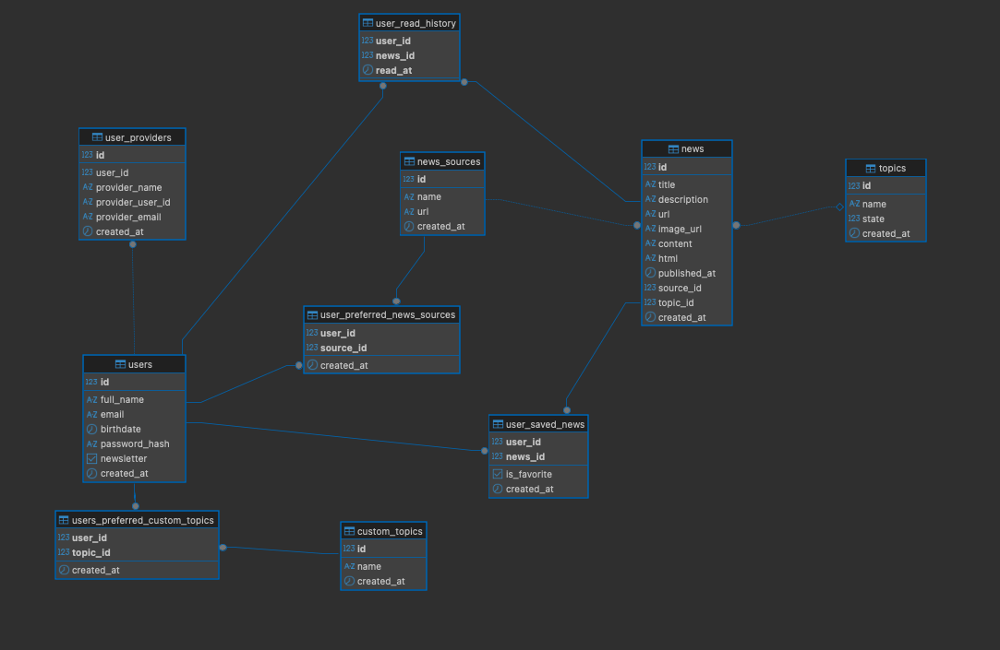
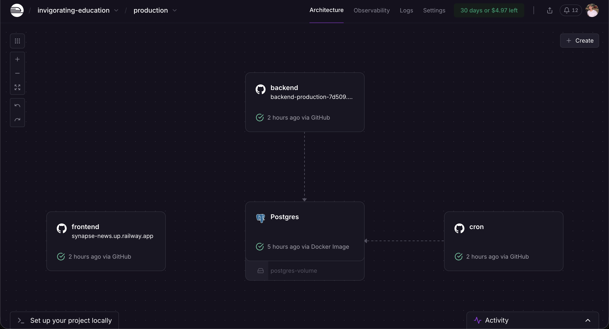
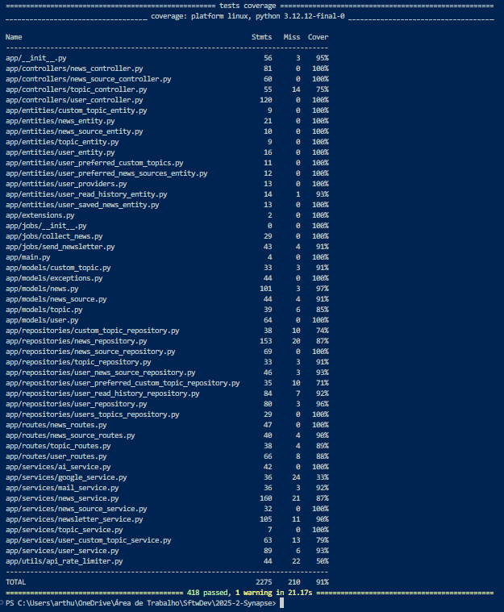

Synapse
Bem-vindo à documentação do projeto
📖 Descrição
O Synapse é uma plataforma inteligente para agregação, personalização e recomendação de notícias, desenvolvida como parte da disciplina de Métodos de Desenvolvimento de Software na UnB.
Seu grande diferencial está na capacidade de oferecer notícias de forma personalizada para cada usuário, garantindo que cada pessoa receba conteúdos relevantes de acordo com seus interesses.

🔗 Links Úteis


Sobre o Projeto
Visão
Transformar a sobrecarga de informação em conhecimento focado, permitindo que qualquer pessoa se atualize sobre seus interesses em menos de 5 minutos diários.
O Problema
Sobrecarga de Informação
Um volume impossível de conteúdo diário gera ansiedade e perda de tempo.
Filtro Ineficiente
Agregadores atuais e redes sociais priorizam engajamento e cliques, não a relevância para o indivíduo.
Perda de Produtividade
Profissionais gastam um tempo valioso tentando separar o "sinal" do "ruído" para se manterem competitivos.
A Solução: Uma Plataforma Rápida e Inteligente
O Synapse é um ecossistema de notícias que inverte a lógica do mercado, focando em eficiência e valor.
Personalização Total
O usuário define seus interesses e fontes. O feed aprende com o uso, incluindo um feedback de “não tenho interesse” para refinar as recomendações.
Resumos com IA
O recurso central da plataforma. A IA gera sínteses objetivas das notícias mais importantes, permitindo uma compreensão rápida do cenário.
Experiência Focada
Interface minimalista, sem distrações e com tempos de carregamento extremamente rápidos (< 3s) para garantir uma leitura fluida.
Newsletter Inteligente
Entrega os resumos de IA personalizados diretamente no e-mail do usuário, mantendo-o informado de forma passiva e eficiente.
💎 Proposta de Valor e Diferenciais
Foco em Velocidade vs. Retenção: Nosso objetivo é tirar o usuário da plataforma o mais rápido possível, mas bem-informado. O mercado quer mantê-lo rolando o feed.
Qualidade vs. Quantidade: Entregamos uma curadoria de alta relevância em vez de um mar de informações.
Eficiência como Recurso Principal: Usamos IA para economizar o tempo do usuário, não apenas para recomendar o próximo conteúdo.
Sinal vs. Ruído: Somos a ferramenta definitiva para filtrar o que realmente importa.
🏛️ Pilares Técnicos
🚀 Performance
Arquitetura otimizada para respostas de API abaixo de 500ms.
🔒 Segurança
Dados protegidos com padrões modernos (JWT, bcrypt, HTTPS).
🎯 Usabilidade
Design totalmente responsivo para uma experiência consistente em desktop, tablet e mobile.
📈 Escalabilidade
Sistema containerizado com Docker e arquitetura desacoplada para facilitar a manutenção e o crescimento futuro.
📋 Levantamento de Requisitos
1. Introdução
Este documento consolida os Requisitos Funcionais (RFs) e os Requisitos Não Funcionais (RNFs) do sistema Synapse. Ele serve como referência para a equipe de desenvolvimento, garantindo clareza sobre o que o sistema deve fazer e como deve se comportar.
2. Requisitos Funcionais
Épico 001: Autenticação e Cadastro
Permitir que os usuários criem e acessem suas contas de forma segura.
Épico 002: Consumo de Notícias
Garantir a melhor experiência para o usuário ao visualizar e interagir com conteúdos noticiosos.
Épico 003: Perfil e Preferências
Permitir que o usuário visualize e personalize suas informações e preferências.
Épico 004: Newsletter
Automatizar o envio de newsletters personalizadas com base nos interesses do usuário.
3. Requisitos Não Funcionais
⚡ Desempenho
| ID | Requisito | Métrica |
|---|---|---|
| RNF-01 | Tempo de Resposta da API | 95% das requisições GET < 500ms |
| RNF-02 | Carregamento da Página Principal | < 3s em conexão banda larga |
| RNF-03 | Execução do Job de Coleta | Concluir em < 1 hora |
| RNF-04 | Chamadas à IA | Resumo em até 10s |
🔐 Segurança
RNF-05: Armazenamento de Senhas
Hash + sal (bcrypt)
RNF-06: Autenticação de API
JWT obrigatório
RNF-07: Comunicação Segura
Exclusivamente HTTPS
RNF-08: Proteção de Chaves
Somente via variáveis de ambiente
📱 Usabilidade
- RNF-09: Responsividade - Suporte a Desktop, Tablet e Smartphone
- RNF-10: Compatibilidade - Últimas 2 versões de Chrome, Firefox, Safari
- RNF-11: Feedback Visual - Indicadores de carregamento
🛠️ Manutenibilidade e Escalabilidade
| ID | Requisito | Métrica |
|---|---|---|
| RNF-12 | Containerização | Docker + Docker Compose |
| RNF-13 | Padrões de Código | Python PEP8, JS/React com Prettier |
| RNF-14 | Separação de Camadas | Controller, Service, Repository |
| RNF-15 | Logging | Log de coletas e erros críticos da API |
🏗️ Arquitetura do Sistema Synapse
📋 Visão Geral
O Synapse é uma plataforma de notícias centralizadora e personalizada, projetada para otimizar o tempo de usuários que precisam acompanhar informações de forma frequente e eficiente, como investidores, estudantes e jornalistas. Utiliza uma arquitetura de aplicação web distribuída com separação clara entre frontend (Single Page Application em React) e backend (API RESTful em Flask), com um banco de dados PostgreSQL e tudo containerizado com Docker.
🎯 Objetivo Principal
Entregar um fluxo de notícias e artigos altamente relevantes, filtrados de acordo com as preferências e comportamento de cada usuário, funcionando como uma newsletter inteligente que agrega conteúdo de diversas fontes.
Visão 1

Visão 2

Visão 3

🛠️ Stack de Tecnologias
🔧 Backend
🎨 Frontend
☁️ Serviços Externos
GNews API
Acesso a fontes globais estruturadas
Google Gemini
LLM avançado para sumarização
Newspaper4k
Extração limpa do texto dos artigos
🏗️ Arquitetura do Backend
📁 Estrutura em Camadas (MVC/Service)
🔄 Fluxo de Dados
Requisição HTTP → Route → Controller → Service → Repository → Model → Database
📋 Responsabilidades das Camadas
Routes
Mapeamento de URLs para controllers
Controllers
Validação de entrada e orquestração
Services
Regras de negócio e lógica aplicacional
Repositories
Abstração de acesso aos dados
Models
Modelos de negócio e representação das tabelas
Entities
Objetos de transferência de dados
🎨 Arquitetura do Frontend
📱 Estrutura de Componentes
Organização do código fonte baseada em Atomic Design e responsabilidades:
Padrões utilizados incluem o uso exclusivo de Componentes Funcionais com React Hooks, Custom Hooks para encapsulamento de lógica, e Route Protection para rotas privadas.
🗄️ Modelo de Dados

🔄 Pipeline de Processamento de Notícias
📊 Fluxo de Coleta
Cron Job
GNews API
Newspaper4k
Google Gemini
PostgreSQL
🔧 Detalhamento do Processo
Job Agendado
Cron job executado periodicamente
GNews API
Coleta links de notícias por tópico
Newspaper4k
Extrai conteúdo limpo dos artigos
Google Gemini
Gera resumos inteligentes
PostgreSQL
Persiste dados processados
⚡ Personalização
Filtragem por Tópicos
Usuários escolhem áreas de interesse
Seleção de Fontes
Preferência por veículos específicos
Histórico de Leitura
Melhoria contínua das recomendações
🚀 Deploy e Infraestrutura
O deploy do sistema Synapse foi realizado com sucesso utilizando a plataforma Railway, escolhida pela sua robustez, facilidade de integração contínua (CI/CD) e suporte nativo a aplicações containerizadas.
Acesse a aplicação em: https://synapse-news.up.railway.app/feed
☁️ Detalhes da Infraestrutura no Railway
A arquitetura definida no projeto foi migrada para serviços individuais dentro do Railway, garantindo escalabilidade e gerenciamento isolado de recursos.

🏗️ Organização dos Serviços
Database (PostgreSQL)
Foi provisionado um serviço gerenciado de PostgreSQL diretamente pelo Railway.
Vantagem: Oferece backup automático, alta disponibilidade e conexão segura interna, sem exposição pública para a internet.
Backend (API Synapse)
O deploy é realizado a partir do diretório ./backend.
utilizando o arquivo de containerização específico. Este serviço atua como o núcleo da aplicação.
Frontend (Interface Web)
O deploy é feito a partir do diretório ./frontend.
A interface é construída de forma otimizada para produção.
Cron Job (Coletor de Notícias)
Foi criado um serviço dedicado do tipo "Worker" que utiliza a configuração específica para tarefas agendadas, rodando em segundo plano sem afetar a performance da API principal.
🔄 Integração Contínua
Continuous Deployment
O deploy está configurado para ser acionado automaticamente. Sempre que uma nova funcionalidade é aprovada e inserida na branch principal do repositório, o Railway detecta a mudança, constrói os novos containers e atualiza a aplicação em produção sem interrupções para os usuários.
🛡️ Qualidade e Integração Contínua (CI)
Para garantir a estabilidade e a confiabilidade do código, o Synapse utiliza esteiras de automação (pipelines) configuradas no GitHub Actions. Cada contribuição submetida ao repositório passa por verificações rigorosas antes de ser integrada às branches principais.
⚙️ A Esteira de CI
A arquitetura de CI foi separada em dois fluxos de trabalho distintos para otimizar o tempo de execução e garantir que apenas os componentes alterados sejam testados (`backend-ci.yml` e `frontend-ci.yml`).
Backend Pipeline
Este fluxo é acionado sempre que há alterações no diretório backend/.
- Ambiente: Ubuntu Latest com Python 3.11
- Dependências: Instalação via pip com cache
- Testes: Suíte completa com `pytest`
Frontend Pipeline
Focado na integridade da interface, acionado quando arquivos em frontend/ são modificados.
- Ambiente: Ubuntu Latest com Node.js 20.x
- Build Check: Executa npm run build
- Validação: Garante que o código compila sem erros
📊 Cobertura de Testes (Code Coverage)
Regra de 90%
O pipeline está configurado para falhar automaticamente se a cobertura de testes for inferior a 90%.
Comando de Verificação:

Ferramenta Utilizada
Utilizamos o pytest-cov para gerar
relatórios detalhados durante a execução da CI.
Benefícios
Garante que novas funcionalidades não sejam inseridas sem os devidos testes e que a dívida técnica relacionada a testes não aumente ao longo do projeto.
🚀 Otimização de Recursos
Verificação Inteligente
Para economizar recursos computacionais e tempo de espera dos desenvolvedores, as esteiras implementam uma verificação inteligente de mudanças de arquivos.
Cenário 1
Se um PR altera apenas documentação ou frontend, a esteira do backend não é executada.
Cenário 2
Se um PR altera apenas backend, a esteira do frontend não é executada.
Espaço para Diagrama do Fluxo de CI/CD
🚀 Releases do Projeto Synapse
Bem-vindo ao histórico de evolução do Synapse. Abaixo detalhamos as entregas, o escopo de cada sprint e os changelogs de cada versão principal.
Release 1: Validação, Base Técnica e Core Funcional
🎯 Objetivo da Release
O foco principal da Release 1 foi estratégico: validar a viabilidade da ideia do Synapse e retirar as principais incertezas técnicas e de produto. O trabalho se concentrou em construir a base da aplicação em três frentes essenciais:
- Uma arquitetura robusta e escalável com Docker, Flask e React.
- O ciclo de vida completo do usuário, incluindo autenticação e gerenciamento de perfil.
- A entrega do protótipo funcional do motor de coleta de notícias, o job automatizado que é o coração do produto.
Foco Estratégico
- Validar a Ideia: Provar a viabilidade técnica do agregador inteligente.
- Retirar Incertezas: Solidificar arquitetura (Flask, React, Docker).
- Provar a Viabilidade: Integração eficiente de Banco de Dados, API, Frontend e Job Agendado.
- Construir a Base: Alicerce de código para escalabilidade futura.
🏃♂️ Sprints da Release 1
Sprint 0: Base Técnica e Alinhamento (24/08/2025 – 06/09/2025)
Meta: Reduzir incertezas e alinhar visão técnica/produto.
✅ Escopo Entregue
- Proposta de Projeto (#1)
- Implementação de Sistema de Recomendação (#2)
- Criar Documentos/Artefatos Iniciais na Wiki (#3)
- Containerização com Docker (#4)
- Arquitetura de Front-end com React (#5)
- Estrutura de uma API com Flask (#6)
- Integração Flask e SQLAlchemy (#7)
- Pesquisa e Definição de Metodologias Ágeis (#8)
- Configurar o Ambiente de Desenvolvimento com Docker (#9)
- Configuração de Banco de Dados (#12)
- Documento de Arquitetura (#13)
- Definir Escopo do MVP (#14)
- Pesquisar e definir a biblioteca de componentes UI (#15)
🚧 Pendências (Não Concluído)
- Criar Design System (#11)
Sprint 1: Autenticação de Usuário (07/09/2025 – 13/09/2025)
Meta: Funcionalidades essenciais de autenticação (criar conta/acesso).
✅ Escopo Entregue
- Criar Meu Cadastro (#17)
- Autenticação de Usuário com E-mail (#18)
- Criar Design System (#11)
- Prova de Conceito para Consumo de APIs de Notícias (#16)
Sprint 2: Gerenciamento de Conta do Usuário (14/09/2025 – 20/09/2025)
Meta: Atualização cadastral e infraestrutura de coleta de notícias.
✅ Escopo Entregue
- Editar Informações da Conta (#57)
- Alterar Senha (#58)
- Script de Coleta de Notícias e Gerenciamento de Fontes (#21)
- Configurar contêiner do job agendado (Cron) (#81)
🚧 Pendências (Não Concluído)
- Visualizar Página de Perfil e Preferências (#22)
- Gerenciar Tópicos de Interesse (#59)
Sprint 3: Ciclo Completo e Documentação (21/09/2025 – 27/09/2025)
Meta: Finalizar ciclo de conta, personalização e documentação técnica.
✅ Escopo Entregue
- Criar gitpage com Hugo (#90)
- Implementar Swagger para documentação dos endpoints (#112)
- Atualizar `README.md` (#92)
- Criar testes unitários da Sprint 2 (#93)
- Gerenciar Tópicos de Interesse (#59)
- Visualizar Página de Perfil e Preferências (#22)
- Gerenciar Fontes de Notícias Preferidas (#80)
- Logout de Usuário (#19)
🚧 Pendências (Não Concluído)
- Criar diagrama C4 (#91)
📝 Changelog [0.1.0-alpha]
2025-09-30
✨ Adicionado
- Autenticação: Registro, login, logout (JWT Cookies)
- Perfil: Visualização/Edição de dados e senha
- Preferências: Gerenciamento de Tópicos e Fontes de Notícias
- Backend: Job Cron (6h) para coleta via GNews API e Web Scraping
- Frontend: Telas de Login, Registro, Conta e Fontes (React + Tailwind)
- Dev: Swagger/OpenAPI e testes com Pytest
Release 2: MVP (Minimum Viable Product)
🎯 Objetivo da Release
Implementar o MVP previamente planejado, entregando valor real ao usuário final através de uma leitura eficiente de notícias e o envio de newsletters personalizadas.
🏃♂️ Sprints da Release 2
Sprint 4: Consolidação (28/09/2025 - 04/10/2025)
Meta: Consolidar uma base estável para a Release 1.
✅ Concluídos
- Release 1 (#94)
- Cobertura de 90% de testes - Release 1 (#120)
- Fix: Data de nascimento com 1 dia a menos (#117)
- Ajustar rotas e fluxo do front end (#108)
- Ajustar linguagem (i18n) em todas as telas (#111)
- Implementar proteção de rotas no frontend (#107)
- Padronização de nome do projeto (Synapse) (#110)
🚧 Não Concluídos
- Criar diagrama C4 (#91)
Sprint 5: Experiência de Leitura (05/10/2025 - 11/10/2025)
Meta: Entregar a experiência central de leitura e consumo do feed.
✅ Concluídos
- Ler Notícia (#26)
- Visualização do Feed Principal (#25)
- Extração de Tópicos da Notícia com IA (#132)
- Favoritar/Salvar uma Notícia (#29)
- Busca inteligente baseada em popularidade (#95)
🚧 Não Concluídos
- Permitir acesso à página principal sem login (#131)
- Criar diagrama C4 (#91)
Sprint 6: Notícias Salvas (12/10/2025 - 18/10/2025)
Meta: Acesso organizado a notícias salvas ("Ler depois").
✅ Concluídos
- Visualizar Página de Notícias Favoritas/Salvas (#33)
Sprint 7: Histórico e Feed "For You" (19/10/2025 - 25/10/2025)
Meta: Histórico de leitura e refinamento do feed.
✅ Concluídos
- Histórico de Notícias Lidas (#34)
- Simplificar Coleta para Tópicos Padrão e Feed "For You" (#151)
- Pesquisa sobre envio de e-mails para newsletter (#149)
- Permitir acesso à página principal sem login (#131)
- Criar diagrama C4 (#91)
Sprint 8: Newsletter (26/10/2025 - 01/11/2025)
Meta: Enviar Newsletter personalizada por usuário.
✅ Concluídos
- Configurar Serviço de Envio de Email (#181)
- Implementar CI/CD (#159)
- Botão "Voltar ao topo" com Framer Motion (#198)
- Envio da Newsletter Diária (#27)
Sprint 9: Refinamentos de UI (02/11/2025 - 08/11/2025)
Meta: Polimento do Frontend e Animações.
✅ Concluídos
- Responsividade em todas as telas (#200)
- Animações de UI com Framer Motion (#184)
- Fix: Problemas de scraping (links, imagens, formatação) (#152)
Sprint 10: Configuração de Newsletter (09/11/2025 - 15/11/2025)
Meta: Personalizar o recebimento da newsletter.
✅ Concluídos
- Responsividade Telas de Login e Cadastro (#213)
- Habilitar/Desabilitar Recebimento da Newsletter (#23)
- UI da Página de Configuração da Newsletter (#212)
🚧 Não Concluídos
- [SPIKE] Hospedagem/Deploy do sistema (#201)
Sprint 11: Refinamento de Scrape (16/11/2025 - 22/11/2025)
Meta: Melhorias no motor de coleta.
✅ Concluídos
- Evoluir Serviço de Scrape (#216)
Sprint 12: Deploy do MVP (23/11/2025 - 29/11/2025)
Meta: Realizar o deploy da versão estável.
✅ Concluídos
- Adicionar link da notícia na página de leitura (#207)
- Fix: Registros duplicados no banco (#155)
- Fix: Tópicos incorretos associados (#215)
- Hospedagem/Deploy do sistema em Produção (#201)
- Autenticação com Google (#41)
- Prompt para resumo com IA (newsletter) (#217)
- Fazer o Deploy do sistema em produção (#223)
- Configuração de chaves .env para Prod (#222)
📝 Changelog [0.2.0]
2025-12-02
✨ Adicionado
- Newsletter Inteligente: Resumos via IA (Gemini), agendamento cron e templates responsivos.
- Google OAuth: Login social e sincronização de contas
- Scraping Avançado: Extração via `newspaper4k`, sanitização de HTML e blacklist de sites.
- Engajamento: Histórico de leitura, Notícias Salvas e Tópicos Customizados (UserSavedNews, CustomTopic).
- Infraestrutura: CI/CD com GHCR e logs estruturados.
🔧 Melhorado
- Cobertura de Testes: >90% (Unitários e Integração).
- Rate Limiting: Controle de chamadas API Gemini.
- Performance: Otimização na coleta de tópicos padrão.
🐛 Corrigido
- Imagens corrompidas nos artigos
- Duplicação de histórico de leitura diário
- Responsividade mobile e inicialização de containers Docker.
Espaço para Timeline Visual das Releases
Como Contribuir
Olá e seja bem-vindo(a) ao time do Synapse! Ficamos muito felizes com seu interesse em contribuir. Este guia contém tudo que você precisa para configurar o ambiente, rodar o projeto localmente e fazer sua primeira contribuição.
🚀 Rodando o Projeto
O Synapse é um projeto de agregador de notícias inteligente, projetado para combater o excesso de informação e oferecer uma experiência de leitura rápida e personalizada. Desenvolvido com um back-end em Flask (Python) e um front-end em React, o sistema é totalmente containerizado com Docker para garantir um ambiente consistente para todos. Para começar, você só precisa do Git e do Docker instalados na sua máquina. Todo o resto é gerenciado pelos nossos contêineres.
Pré-requisitos
Passo a Passo
Abra seu terminal, clone o projeto e entre na pasta.
1. Clone o Repositório
O backend precisa de um arquivo `.env` para as chaves de API e configurações do banco de dados. Você pode copiar o exemplo:
2. Configure as Variáveis de Ambiente (Backend)
Importante: Abra o arquivo .env e preencha as chaves de API necessárias (como a da `GNews API`).
O frontend precisa saber o endereço da API. Crie o arquivo `.env` dentro da pasta `frontend/`:
3. Configure as Variáveis de Ambiente (Frontend)
Este é o comando mágico que irá construir as imagens e iniciar todos os serviços (backend, frontend, banco de dados e o job agendado). A flag `--build` garante que as imagens serão reconstruídas se houver mudanças e a flag `-d` (detached) roda os contêineres em segundo plano.
4. Suba os Contêineres com Docker Compose
5. Tudo Pronto! ✅
Se tudo correu bem, a aplicação estará disponível nos seguintes endereços:
🤝 Como Contribuir
Com o ambiente rodando, você está pronto para contribuir! Existem várias formas de ajudar:
Reportando Bugs
Encontrou um problema? Abra uma Issue detalhando o erro.
Sugerindo Melhorias
Tem uma ideia para uma nova funcionalidade? Abra uma Issue com a tag `enhancement`.
Escrevendo Código
Para corrigir bugs ou implementar features, siga nosso fluxo.
Nosso Fluxo de Trabalho (Git Workflow)
1. Crie uma Branch a partir da `dev`
Todo novo trabalho deve ser feito em uma branch separada, criada a partir da `dev`. Exemplos: `feat/pagina-de-perfil`, `fix/erro-login-social`, `docs/atualizar-getting-started`
2. Faça Commits Atômicos e Semânticos
Siga o Padrão de Commit. Cada commit deve representar uma pequena unidade lógica de trabalho. Veja a tabela abaixo.
3. Mantenha sua Branch Atualizada
Antes de submeter seu trabalho, sincronize sua branch com a `dev` para resolver possíveis conflitos.
4. Abra um Pull Request (PR)
Quando seu trabalho estiver pronto, envie um Pull Request para a branch `dev`. Preencha o template do PR para que todos entendam o que foi feito.
5. Aguarde a Revisão de Código
Pelo menos um outro membro da equipe precisa revisar e aprovar seu PR antes que ele seja integrado.
📈 Nosso Processo de Desenvolvimento
Para garantir a qualidade e o alinhamento, seguimos dois conceitos importantes:
Definition of Ready (DoR)
Uma tarefa está pronta para ser iniciada se:
- ✅ A história está bem escrita e clara.
- ✅ Os Critérios de Aceitação são objetivos e testáveis.
- ✅ Foi discutida e entendida por todo o time de desenvolvimento.
- ✅ Foi estimada em Story Points.
Definition of Done (DoD)
Uma tarefa é considerada concluída quando:
- ✅ O código foi implementado conforme os Critérios de Aceitação.
- ✅ O código foi revisado e aprovado por, no mínimo, um colega.
- ✅ Testes automatizados (quando aplicáveis) foram criados e estão passando.
- ✅ A funcionalidade foi integrada à branch `dev`.
- ✅ Foi demonstrada e validada na Sprint Review.
📝 Padrão de Commits Semânticos
A estrutura é: <emoji> <tipo>(<escopo>): <descrição>
| Tipo | Emoji | Descrição |
|---|---|---|
| feat | ✨ | Uma nova funcionalidade para o usuário |
| fix | 🐛 | Uma correção de bug |
| docs | 📚 | Mudanças apenas na documentação |
| chore | 🔧 | Mudanças de configuração, scripts, tarefas |
| refactor | ♻️ | Refatoração que não altera funcionalidade |
| test | 🧪 | Adição ou modificação de testes |
| style | 💄 | Mudanças de estilo e formatação |